Guillain–Barré syndrome: the debrief
Wednesday, 10:40 · majors, bed 6
His NEWS2 was 1. He was on a ventilator before morning.

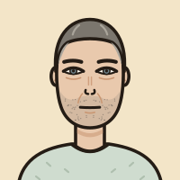
- Terry Ashworth is 46.
- For twelve days pins and needles have climbed from both feet to his legs, then to his hands.
- Yesterday evening his voice went thick.
- This morning he could not get out of bed.
- Respiratory rate 20. Saturation 97% on air. Blood pressure 145/93. Pulse 92. Temperature 37.0. Alert.
- NEWS2: 1.
- On his record: type 1 diabetes, hypertension, high cholesterol, and “functional neurological disorder (2023)”.
- His first words: “Before you look at that screen. This is not like last time.”
- Whatever was done that day, he was intubated that night.
- Planned and on the unit, or an emergency on the ward at ten past two: that was what the day decided.
In plain English
An illness of the nerve roots and nerves, moving by the day.
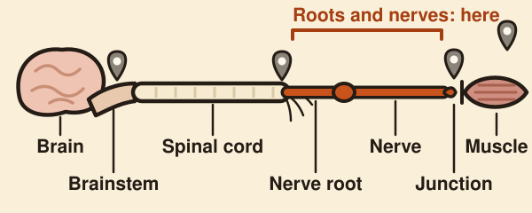
- In Guillain–Barré syndrome the nerves that carry orders from the spinal cord to the muscles stop carrying them.
- An infection sets off an immune response that turns on the nerve roots and the nerves.
- A lower motor neurone lesion takes away the reflex and the tone.
- It gets worse for days to weeks, and for no more than four weeks.
- About one in five needs a ventilator.
- About one or two people in every 100,000 get it each year.
- A hospital serving 300,000 people would expect three to six a year (our arithmetic).
10:40 · NEWS2 1
His chart is quiet. His wife is not. What do you want to know about his breathing?
- Respiratory rate 20. Saturation 97% on air. NEWS2 1.
- Harriet: “He’s stopping for a breath halfway through a sentence, and he never did that.”
His vital capacity.
| 10:40 | 12:40 | 19:40 | |
|---|---|---|---|
| Vital capacity | 1.70 L | 1.58 L | 1.16 L |
| Respiratory rate | 20 | 22 | 26 |
| Saturation on air | 97% | 96% | 94% |
| pCO2 | 5.0 | 5.4 | 5.9 kPa (range 4.7 to 6.0) |
| NEWS2 | 1 | 3 | 5 |
- From 12:40 to 19:40 his vital capacity was under 20 mL/kg, with a NEWS2 of 3 and a normal pCO2.
- A quiet breath uses a small part of what the muscles can do, so it survives long after the deep breath has gone.
- He keeps his carbon dioxide normal by breathing faster and shallower.
- The gas turns only when the muscles are down to about a quarter of their strength.
- Missed, it can end in death or brain injury from lack of oxygen.
80 kg × 20 mL = 1.6 litres
Twenty millilitres a kilogram, or a fall of a third. That is the call.
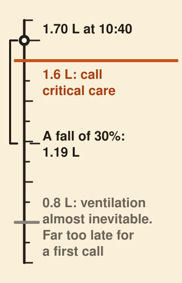
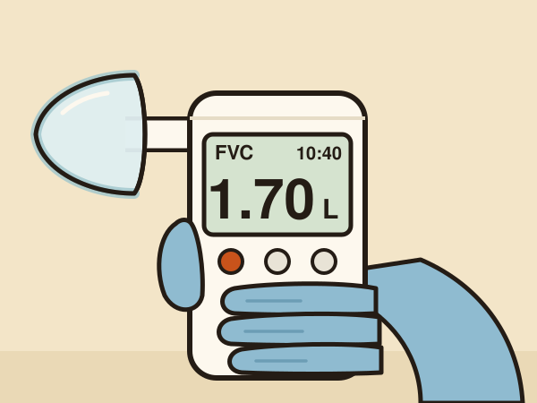
- Take the best of three blows.
- Below 20 mL/kg, call critical care.
- 60 kg: 1.2 L. 70 kg: 1.4 L. 80 kg: 1.6 L.
- A fall of more than 30% in 24 hours means critical care now, whatever the number.
- Repeat it four-hourly while he is getting worse.
- By 10 mL/kg the guideline calls ventilation “almost inevitable”.
- That is far too late for a first call.
No spirometer to hand?
- Ask him to take the deepest breath he can and count aloud until it runs out.
- If he cannot reach 20, it is abnormal.
- Terry reached 15 at 10:40 and 13 after 12:40.
- Lie him flat and watch his abdomen.
- Terry’s moved in as he breathed in.
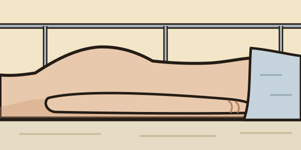
- The abdomen moving in as he breathes in usually means considerable weakness of the diaphragm.
1.70 L at 10:40 · 21 mL/kg · above the line
His vital capacity is 1.70 litres at 10:40. What now?
Ring now.
- On the guideline’s flow chart, aspiration or the threat of it is enough on its own to make a patient high risk.
- He coughed on his tea that morning.
Measure again.
- Two blows in one sitting may differ by up to 0.15 litres and still count as the same reading.
- On his readings that took three hours: 1.52 L at 13:40.
The scan.
- Ask for the spine MRI at 11:16 and the ward clock reads 15:16 when the report comes.
- “MRI whole spine. Not performed. Patient unable to lie supine for positioning; examination abandoned.”
- It is not a reason to pause the measuring, the calls or the treatment.
Feet, legs, hands, speech
Weak in arms and legs, reflexes gone, worse for days. That is the diagnosis.
- Weakness of arms and legs that is getting worse.
- Tendon reflexes reduced or absent in the weak limbs.
- Getting worse for no more than four weeks.
- Both sides much alike.
- Sensory symptoms that are mild beside the weakness.
- A weak face on both sides.
- An infection in the six weeks before.
- One side clearly and persistently worse.
- A sensory level.
- Brisk reflexes or upgoing plantars.
- Bladder or bowel trouble.
- Fever at the start.
- Altered consciousness.
- More than 50 white cells in the spinal fluid.
- No worsening after 24 hours, or still worsening after four weeks.
- Bladder or bowel trouble makes it less likely but does not exclude it.
- Early on, reflexes can still be normal or brisk.
- Terry had all three of the first, most of the second, and none of the third.
Each explained part of him
Four other answers each explained something. One explained everything.
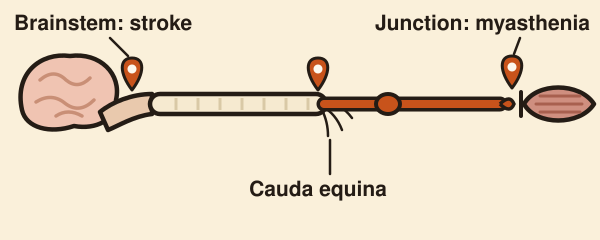
| Weak arms and hands | Weak face, slurred speech | No reflexes in the arms | Tingling hands | Both sides alike, nothing sudden | |
|---|---|---|---|---|---|
| Cauda equina | no | no | no | no | can be |
| Stroke | yes | yes | no | no | no |
| Myasthenia gravis | yes | yes | no | no | yes |
| His 2023 episode | no | no | no | no | no |
| Guillain–Barré syndrome | yes | yes | yes | yes | yes |
- Cauda equina is suspected on bladder, bowel, sexual and saddle symptoms with leg or back pain.
- He had weak arms, a weak face and slurred speech, which the cauda equina cannot reach.
- If the symptoms are there, a normal examination does not rule it out.
- A bladder scan supports. It must not be used alone.
- The national pathway: a residual under 200 mL “could not exclude CES”.
- Six in ten of those who went to emergency surgery had less than 200 mL left in the bladder.
- Normal anal tone is not reassurance.
- Back pain does not sort the two: pain is a supportive feature of Guillain–Barré syndrome.
- A brainstem stroke can weaken both sides and slur the speech.
- Myasthenia fatigues: the voice fades by fifty and the eyes cannot hold an upward gaze.
- It leaves feeling and reflexes alone.
- Steroids are central to treating myasthenia and are recommended against here.
- The label was three years old. The signs were twelve days old.
- NICE: new symptoms or signs in an adult with a functional neurological diagnosis are assessed as they would be in anyone.
| 2023 | This fortnight |
|---|---|
| One leg | Both legs, then both hands |
| One afternoon | Twelve days |
| No tingling | Tingling from the first day |
| Reflexes present | Reflexes absent |
Nerja, three weeks ago
He had not been ill. Four of his family had.
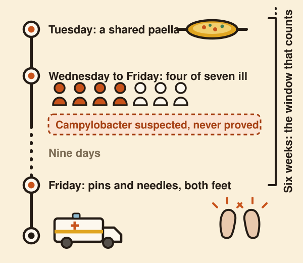
- About two thirds of patients recall an infection in the six weeks before.
- About a third recall nothing.
- Campylobacter jejuni, a cause of food poisoning, is the infection most often found.
- In the largest study, three in ten had blood-test evidence of a recent Campylobacter infection.
- You do not have to have been ill with it.
- Four of Terry’s family were ill nine days before his feet began to tingle.
- A history of recent diarrhoea helps when the answer is yes and tells you nothing when it is no.
- Testing for the infection rarely helps: the result usually arrives after the diagnosis.
- In Terry the organism was never proved.
Look, tone, power, reflexes, sensation
Examine him in order, and say it in one breath.
“Mr Ashworth is 46, with twelve days of tingling and then weakness, climbing from his feet.”
“He has symmetrical weakness of all four limbs, worse distally.”
“Power is grade 1 at the ankles and toes and 3 at the hips.”
“It is 3 in the hands, wrists and elbows and 4 at the shoulders.”
“Tone is reduced.”
“I could not obtain a reflex in the arms or the legs, even with reinforcement.”
“The toes did not move to the plantar stimulus.”
“Light touch is lost at the feet and reduced to the knees and in the fingers, with no sensory level.”
“He has bilateral facial weakness, full eye movements and slurred speech.”
“Neck flexion and cough are weak.”
“This is an acute, symmetrical, lower motor neurone weakness with mild distal sensory loss.”
“I think this is Guillain–Barré syndrome, and I want his vital capacity measured now.”
Fifteen movements · five jerks · three maps
Cover the answers. Tap to check.
- The case printed the short form, C7.
- If a reflex is hard to get, reinforce it: clench the teeth for the arms, pull interlocked fingers apart for the legs.
- Terry’s toes did not move.
The three maps, with the points to test. Switch between front, back and arms.
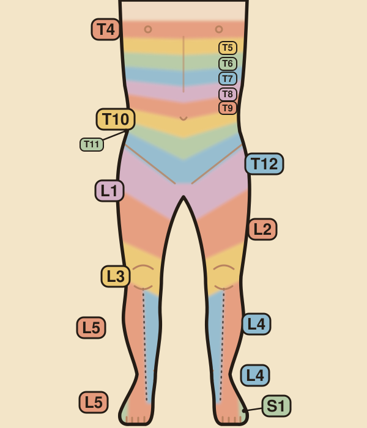
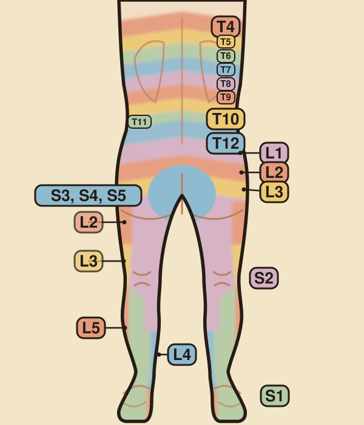
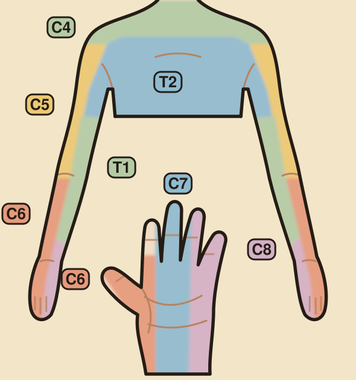
- What it added up to: nothing felt at the feet, faint to the knees and in the fingers, normal on the trunk.
- No sensory level.
- Ordinary feeling beside the anus is one reassuring finding. It is not a rule-out.
Protein 0.98 g/L · 2 white cells
Every test supports. None confirms. None is waited for.
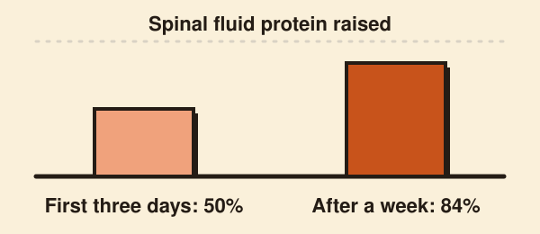
- Lumbar puncture. Protein up, cells normal or nearly so.
- The older name is albumino-cytological dissociation (Leonhard 2019).
- Protein was raised in half of those sampled in the first three days, and in 84% after a week.
- A normal protein in the first week excludes nothing.
- More than 50: think again.
- Terry’s, on day twelve: protein 0.98 g/L, 2 white cells.
- Immunoglobulin can raise the protein and the cells in the spinal fluid.
- So take the fluid first, if that causes no delay.
- Nerve conduction. Supports an early diagnosis, and can be normal in the first week.
- MRI spine. Only for a real question of cord compression or myelitis.
- Bladder scan. Terry’s showed 45 mL after voiding.
- It supports. It is never used alone.
- The diagnosis is clinical. Treatment does not wait for any of these.
Before any result is back
Measure, repeat, call, protect the swallow, monitor, treat.
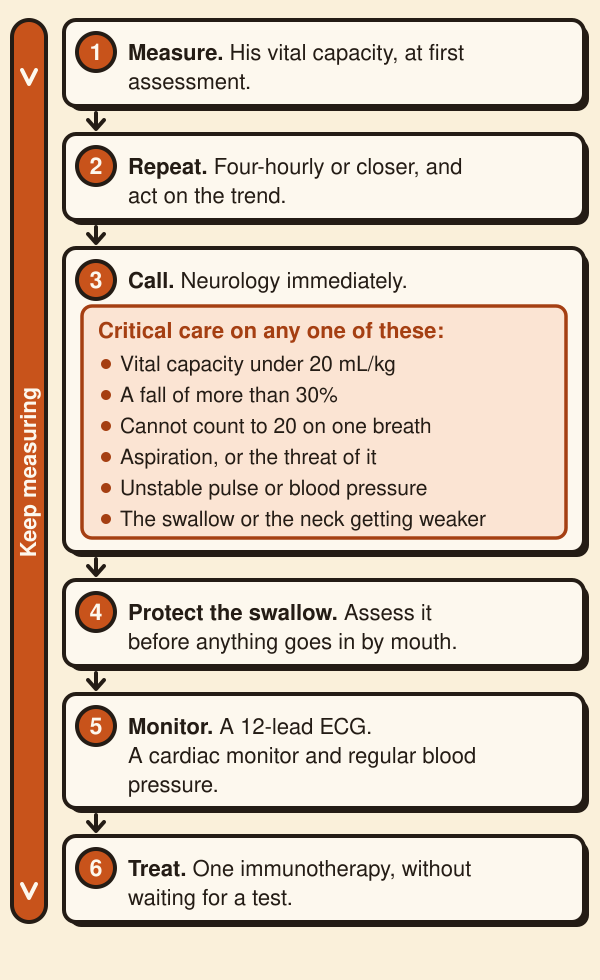
- A planned intubation carries fewer complications than an emergency one.
- Terry coughed on the second teaspoon of his swallow screen.
- Nil by mouth does not mean no insulin.
- In type 1 diabetes the long-acting insulin carries on, and if he will miss more than one meal he needs an insulin infusion as well.
- Then: thromboprophylaxis, and ask about pain.
Either. Only one.
Immunoglobulin or plasma exchange: equally good. Choose what you can start.
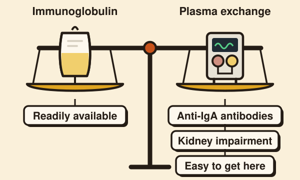
- Who: anyone who cannot walk unaided, as soon as possible.
- Immunoglobulin is recommended within two weeks of the first weakness, and is reasonable up to four.
- Plasma exchange, within four weeks.
- Immunoglobulin: 0.4 g/kg a day for five days.
- Plasma exchange: four to five exchanges over one to two weeks.
- The guideline has no preference: six trials, 567 patients, no significant difference.
- NHS England asks for exchange to be preferred where it is appropriate and easy to get.
- IgA deficiency with known anti-IgA antibodies is a contraindication to immunoglobulin.
- Kidney impairment is a caution.
- Those are reasons to prefer exchange.
- Neither treatment is known to change the vital capacity the same day.
Six reflexes to resist
Each of these sounds reasonable at the bedside.
No.
The guideline recommends strongly against oral steroids and weakly against intravenous.
Intravenous methylprednisolone showed no benefit in 242 patients.
Diabetes was commoner in those given steroids.
No.
The guideline recommends strongly against it: probably no extra benefit, more adverse events, more cost.
Exchange after immunoglobulin washes out the immunoglobulin just given.
No.
The guideline recommends strongly against it.
In the trial there was no benefit, and serious adverse events in 35% against 16%.
About 40% of patients have not improved four weeks after treatment. That is not failure.
No.
Those change last. Measure the vital capacity.
Ask for it if the cord is a real question.
Do not wait for it.
No.
The BNF lists marked neuromuscular respiratory weakness as a contraindication to benzodiazepines.
Days, weeks, months
Treatment starts the recovery. It does not end the watching.
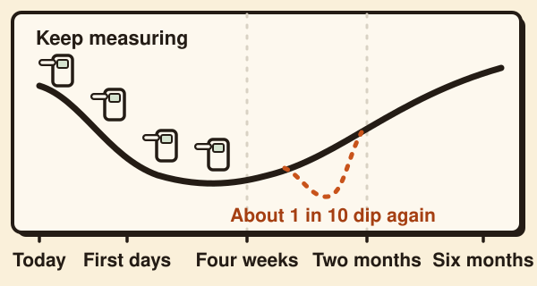
- The first days. He may still get worse after treatment starts.
- Keep measuring until significant worsening is unlikely.
- Four weeks. About 40% have not improved. That does not mean the treatment failed.
- Within two months. About one in ten worsens again after first improving or levelling off.
- This is a treatment-related fluctuation, and re-treatment may be considered.
- Still worsening beyond eight weeks, or three or more such dips: think of the chronic form, about 5%.
- Two thirds of deaths come after discharge from intensive care, from breathing and the heart.
- Six months. About 80% walk on their own.
What the day showed
The chart was right, and so was his wife.

- Nothing given that day changed his breathing.
- What changed the night was who had been called and who was measuring.
Five things to do differently.
- Weak and getting weaker: take the vital capacity, write it in litres and mL/kg, and write when it is next due.
- Ring critical care at 20 mL/kg, at a fall of a third, or at a failing swallow. Do not wait for the chart.
- Take a tendon hammer to all four limbs, and examine the arms and the face before you blame the spine.
- One immunotherapy, no steroids, and keep measuring after it starts.
- Read the old label after you have listened to the patient.
Where this comes from
- EAN/PNS guideline on Guillain–Barré syndrome, Eur J Neurol 2023.
- Leonhard, Nat Rev Neurol 2019.
- NICE NG127, 2019, updated 2023.
- NHS England immunoglobulin policy, 2025.
- BNF.
- GIRFT national cauda equina pathway, February 2023, updated March 2026.
- ATS/ERS spirometry standard, 2019.
- Mangera 2012 and Racca 2020, reviews of breathing in neurological disease.
- Royal College of Physicians, NEWS2, 2017.
- ABN myasthenia guideline, 2015.
- JBDS 03, diabetes and surgery, 2016.
- Roots and dermatome points: ISNCSCI worksheet 2019; MRC Aids 1976; patient.info examination pages 2026.
- Read as abstracts only: Fokke 2014; Rees 1995; Takahashi 2005; Leonhard 2022; Walgaard 2021.
- Local trust guideline, as an example of UK ward practice: Norfolk and Norwich, 2022.
Guidelines change. Checked October 2026.